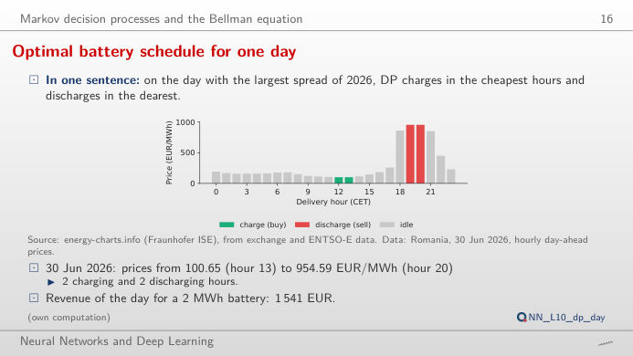
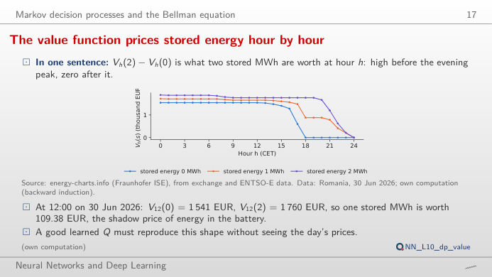
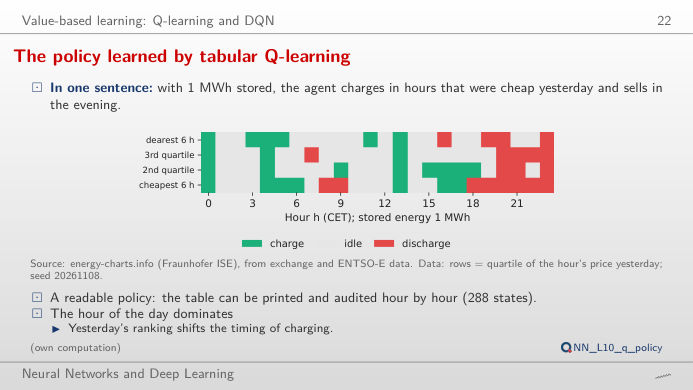
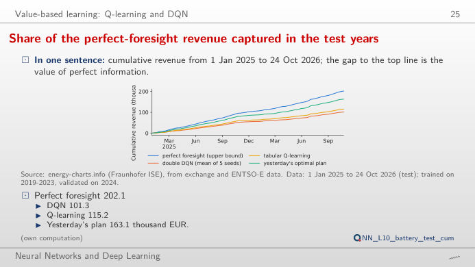
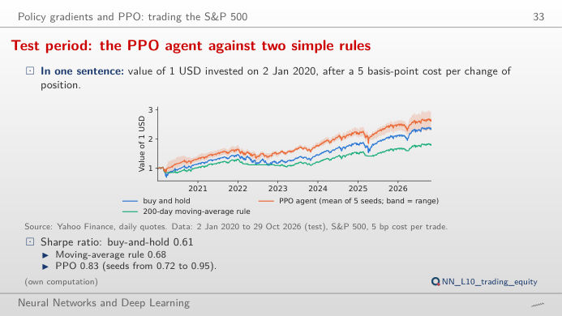
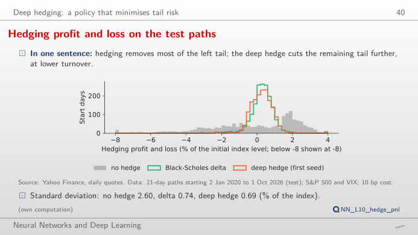

Reinforcement learning (RL) on three real problems: a 2 MWh (megawatt-hour) battery trading on the day-ahead power market, a position in the S&P 500 index that is either flat or long, and the daily hedge of a one-month call option. The slide of the lecture is on the left, the same figure on the right, recomputed in your browser from the course data (data/clean) and from the decisions of the trained agents when you move a control. The ▶ button moves the main parameter step by step. Under each figure: a readout, a question for the room and the Quantlet with the code of the chart.
The battery as a Markov decision process (MDP): dynamic programming (DP) · Value-based learning: Q-learning and the deep Q-network (DQN) · Policy gradients: proximal policy optimisation (PPO) for trading · Deep hedging of a short call
The battery as a Markov decision process (MDP): dynamic programming (DP)
Optimal battery schedule for one day

Answer
Almost, not quite: 2,885 EUR, 87% more. The battery moves 1 MWh per hour, so the third and fourth MWh are bought in less cheap hours and sold in less dear ones; with 6 MWh the revenue is 3,282 EUR, only 14% above 4 MWh, because the evening peak lasts a few hours. A perfect battery (100% round trip) would earn 1,745 EUR at 2 MWh. On the same day Hungary gives 1,466 EUR, Germany–Luxembourg 708 EUR and Bulgaria 744 EUR: the revenue follows the daily spread, not the price level. All these numbers are upper bounds, because dynamic programming (DP) sees the 24 prices of the day before they are known.
The value function prices stored energy hour by hour

Answer
At 12:00, V12(0) = 1,541 EUR and V12(2) = 1,760 EUR, so each stored MWh is worth 109.38 EUR: the shadow price of energy in the battery, about what it costs to buy it at midday. At 18:00 each MWh is worth about 880 EUR, because the two dearest hours (19:00 and 20:00) are still ahead. At 23:00 (switch to the value of one more stored MWh) the first MWh is worth 211 EUR (it can still be sold in the last hour) and the second nothing, since only 1 MWh can be moved per hour. The Bellman equation builds these values backwards from V24(s) = 0, and the optimal action at each (h, s) is the one that attains the maximum.
Value-based learning: Q-learning and the deep Q-network (DQN)
The policy learned by tabular Q-learning

Answer
It charges: Q(charge) = 175.0 EUR, Q(idle) = 167.2 EUR, Q(discharge) = 139.6 EUR, the values of the rest of the day after each action, learned from 1,746 training days (2019–2023). The margin over idling is small, about 8 EUR. With 1 MWh stored, the row of yesterday's cheapest hours charges in 7 hours and discharges in 8, mostly from 18:00 on: the hour of the day dominates, as in the lecture. With 0 MWh the agent can only charge or wait, with 2 MWh only discharge or wait (action masking). The table has 24 × 4 × 3 = 288 states and can be printed and audited.
Share of the perfect-foresight revenue captured in the test years

Answer
Yesterday's plan: 163.1 thousand EUR, 80.7% of the 202.1 thousand EUR upper bound. Tabular Q-learning captures 115.2 thousand EUR (57.0%) and the double DQN 101.3 thousand EUR (50.1%, mean of 5 seeds; choose the seeds one by one to see the spread between them). The DQN beats the naive plan on only 9% of the days. The learning agents see a coarse summary of yesterday (price quartiles and a few features), the naive plan the full 24-hour profile of yesterday, and prices are strongly autocorrelated from one day to the next: a simple benchmark is hard to beat.
Policy gradients: proximal policy optimisation (PPO) for trading
Test period: the PPO agent against two simple rules

Answer
Only partly. At 20 bp the mean Sharpe ratio of the seeds falls to 0.63, level with buy and hold (0.61); at 30 bp it is 0.50, and two seeds that trade often drop to 0.02 and 0.07. Starting in 2023, buy and hold has a Sharpe ratio of 1.23 against 1.04 for PPO at 5 bp: the advantage comes from 2020 and 2022, when the agent was partly out of the market (exposure chart). The seeds differ (0.72 to 0.95 at 5 bp) and the block-bootstrap interval of the Sharpe difference in the lecture, −0.08 to 0.56, contains zero. One backtest of an RL agent is not evidence of skill.
Deep hedging of a short call
Hedging profit and loss on the test paths

Answer
Over the 1,696 test paths (start days 2020–2026), the 95% ES of the loss is 6.82% of the index level without a hedge, 1.94% with the Black-Scholes delta and 1.15% with the deep hedge (mean of 5 seeds). The standard deviations are close (0.74% and 0.69%): the network was trained to shrink the tail, not the variance. The gain is larger in stress: with VIX below 20 at the start (986 paths) the ES falls from 1.41% to 1.01%, with VIX of 20 or more (710 paths) from 2.60% to 1.31%. At 99% the ES is 4.09% against 2.43%.
Hourly day-ahead prices: OPCOM (Romania), HUPX (Hungary), EPEX (Germany–Luxembourg), IBEX (Bulgaria), via energy-charts.info (Fraunhofer ISE); delivery hours in Central European Time (CET/CEST), days with 24 complete hours; since October 2025 each hour is the mean of four 15-minute prices. S&P 500 and Cboe Volatility Index (VIX): Yahoo Finance, daily closes. The agents were trained once by lectures/L10/analysis_L10.py (five seeds, 20261108–20261112); the page replays their test-period decisions and recomputes the dynamic programme, the costs and the risk measures. Data to the cut-off of the lecture, 31 October 2026.